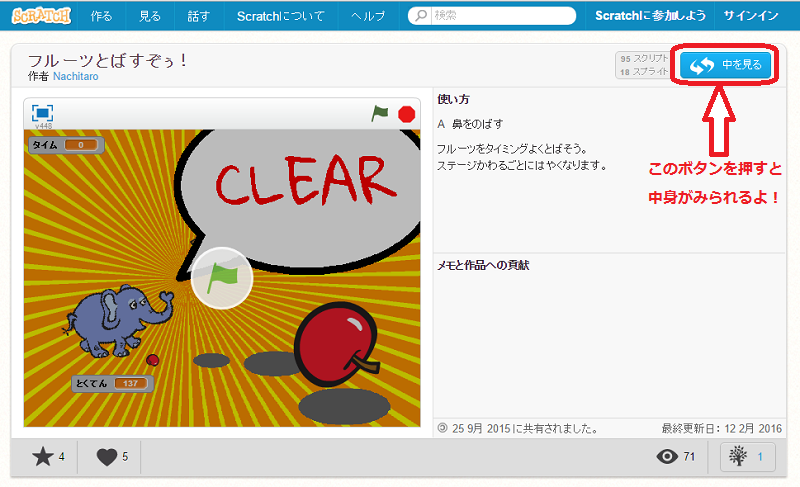

Scratch(スクラッチ)とは初心者が最初に正しい構文の書き方を覚えること無く結果を得られるプログラミング言語学習環境です．
MITメディアラボが開発し，遊び心のある実験やアニメーション，ゲームなどの製作を通してさらなる学習のやる気を起こさせることを意図してつくられました．
各国語でプログラムできるので，プログラミング初心者がみても，とてもわかりやすくなっています．Scratchはいろいろなゲームやツール，アニメーションなどをつくることができるため，プログラミング初心者だけでなく上級者でも楽しめるものとなっています．

このサイトで紹介しているゲームはすべてScratchで作られています！ゲームのプログラムが見たいときは，各ゲーム紹介ページ下の『このゲームのページへ』ボタンをおしてください。とんだリンク先の右上にある『中をみる』ボタンをおすと， そのゲームのプログラムをみることができます．Scratchの面白さ，楽しさ，わかりやすさを伝え，プログラミングに興味をもってもらいたい と思いこのサイトを作成しました．ぜひ，見た目だけでなく中身も見てみてね！